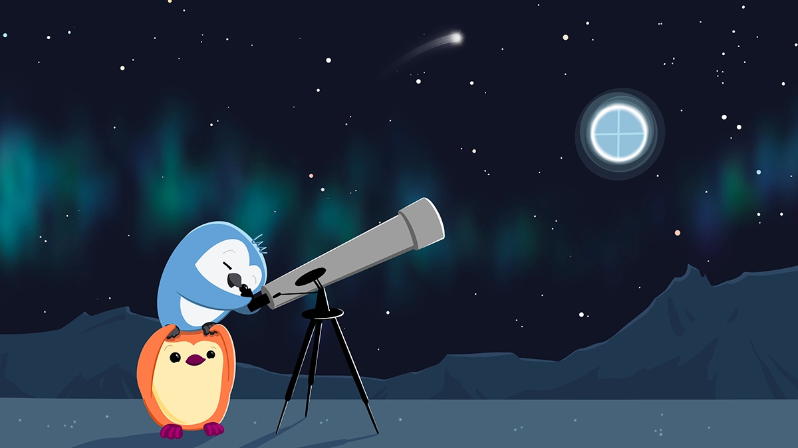

먼저 참고하면 좋은 글
- Quarto로 하루 만에 블로그 만드는 방법이 궁금하다면?
- GitHub와 Quarto 블로그 프로젝트를 연결하려면?
Netlify가 무엇이죠?
정적 웹사이트를 호스팅하고 관리할 수 있는 무료 플랫폼 입니다. R 커뮤니티 뿐만 아니라 기술 블로그를 운영하는 다양한 개발자 커뮤니티에서 인기있는 서비스 입니다.1 Quarto 블로그는 기본적으로 미리 knit을 통해 완성한 html을 서버로 전송하는 방식을 채택합니다. 따라서 웹 호스팅이 간편하고 빠르며 보안성이 높습니다.
Netlify 쉬운가요?
네!
다음과 같은 설정 1번만 해 두면, 블로그에 새 글을 추가하거나 변경하는 내용이 자동으로 배포됩니다. 이를 지속적 배포(continuous deployment) 라고 합니다. 이런 기술적 용어나 원리는 몰라도 됩니다. Netlify 서비스가 모든 것을 관리해 주니까요.
여러분이 할 일은 Quarto로 만든 블로그 작성 프로젝트를 깃헙에 연동한 뒤, Netlify에 해당 깃헙을 연결하는 설정 1번만 하는 것이에요.
해외 서비스라서 모든 기능이 영어로만 제공된다는 것이 조금 불편할 수 있지만, 구글 번역기 등을 활용해서 충분히
깃헙 - Netlify 연결하기
Quarto 블로그 프로젝트를 깃헙에 연결하는 방법은 이 블로그 포스팅 도입부에 소개한 R Quarto로 블로그 만들기 글을 참고해 주세요. 여기서는 깃헙 연동에 성공한 이후 Netlify 연결 방법에 관해 소개합니다.
(1) Netlify 계정 만들기
처음 시작하는 계정은 무료 입니다. 추후 블로그 방문자 트래픽이 커지면 비용이 발생할 수 있지만, 대부분의 개인 블로그 정도는 무료로 운영 가능합니다. 무료 계정 허용 용량 이상 트래픽은 로그인 후 제공하는 대시보드 형태 화면에서 확인 가능 합니다.
신규 계정 만들 때는 깃헙 계정을 연동하는 방식을 추천 합니다. 어차피 우리가 배포하려는 서비스가 깃헙에 등록되어 있기 때문에 다른 이메일 주소로 가입하더라도 깃헙 계정과 연동을 해야 하긴 합니다.
(2) 깃헙 레포지토리 불러오기
로그인 후 보이는 화면에서
Add new site클릭Import an existing project선택Deploy with GitHub선택깃헙 계정과 연동 허용
Netlify에서 배포할 레포지토리를 선택
{kind=link}
(3) 사이트 이름 지정
기본적으로 xxxx.netlify.app 이라는 홈페이지 주소가 자동 부여됩니다.
Site name에 내가 원하는 서브 도메인 이름을 영어로 작성하여 사용 가능 여부를 확인 합니다.
- 이 단계에서 놓쳐도 설정에서 변경할 수 있어요.
{kind=link}
(4) (가장 중요) 배포 폴더 지정
Build settings > Publish directory 에서
_site라고 입력합니다.- 이 옵션은 Quarto 블로그 프로젝트를 생성했다면 공통 적용 입니다.
다른 것은 수정하거나 추가하지 마세요.
Deploy XXX (배포할 레포지토리 이름) 버튼 클릭하세요
{kind=link}
여기까지 5분 정도 걸리셨나요? 모든 설정이 끝났어요. 진짜로요.
이제 블로그 쓰기만 하세요
지금 여러분이 보고 있는 Mindful Analytics 블로그도 바로 Quarto-GitHub-Netlify 조합으로 만들고 배포 하였습니다. 이 연동 설정은 1회만 하면 됩니다. 앞으로는 Quarto로 추가 포스팅 작성 후 GitHub로 커밋 & 푸쉬만 하면 Netlify가 해당 변경 내용을 실시간으로 받아서 웹사이트를 상시 업데이트 해 줍니다. 변경에 대한 배포에 대해 고민할 필요가 없는 것이 Netlify를 쓰는 가장 큰 장점 이에요.
(보너스) 연동 후 새로운 글 배포하는 방법
posts 폴더 안에 새로운 블로그 글을 작성할 폴더를 만듭니다.
작성할 포스트 제목을 나타내는 키워드를 영어로 골라서 폴더명을 쓰세요.
예를 들어, 제가 작성 중인 이 포스트는 netlify-deployment 폴더 안에 있습니다.
이 폴더 이름이 블로그 글 주소에 들어가게 됩니다.
새로 만든 폴더 안에 .qmd 파일을 생성하고 블로그 템플릿을 참고하여 새 글을 작성합니다.
- 추가할 그림이나 데이터는 이 폴더 안에 함께 담아 주면 별도 경로 지정할 필요가 없어요.
글 작성 후 웹 등록하려면 다음 2가지를 꼭 기억하세요.
블로그 .qmd의 yaml 헤더에
draft: false인지 꼭 확인하세요 (삭제하면 더 좋아요)다 작성한 뒤 반드시
Render를 해서 html 파일을 생성합니다. 변경 사항 저장 시 자동 Render 되도록Render on Save옵션을 활성화하면 편리합니다._site 폴더 안에 내가 만든 포스팅 폴더가 추가 되었는지 확인하세요
깃헙에 변경된 내용을 커밋 & 푸쉬하는 것 잊지 마세요.
여러분도 R로 쓰는 블로그, Quarto-GitHub-Netlify 조합으로 쉽고 빠르게 만들어 나가시길 바랍니다.
Footnotes
정적 웹사이트란 미리 웹 페이지 내용이 생성되어 서버에서 사용자 요청에 따라 생성되거나 처리되는 컨텐츠가 없는 사이트 입니다.↩︎